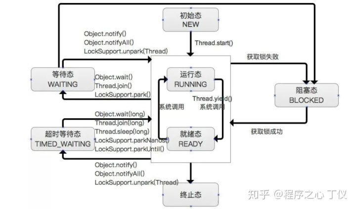

多线程的出现是要解决什么问题的?
随着计算机硬件技术的发展，CPU、内存、IO等设备的速度差异有了极大的差异，为了充分的利用 CPU 资源，平衡这三者的速度差异，计算机体系结构、操作系统、编译程序都做出了贡献。
- CPU 增加了缓存，以均衡与内存的速度差异， 导致了 可见性问题
- 操作系统增加了进程、线程，以分时复用 CPU，进而均衡 CPU 与 I/O 设备的速度差异，导致了原子性问题
- 编译程序优化指令执行次序，使得缓存能够得到更加合理地利用。导致了顺序性问题
并发出现问题的根源
结合上一个问题看这个问题
原子性、可见性、有序性：
原子性
原子性指的是一个或者多个操作，要么全部执行并且在执行的过程中不被其他操作打断，要么就全部都不执行。
最有代表性的示例就是银行转账问题了：比如从账户A 向账户B 转1000元，那么必然包括2个操作：从账户A减去1000元，往账户B加上1000元。
如果这2个操作不具备原子性，会造成什么样的后果。假如从账户A减去1000元之后，操作突然中止。则只有 账户A 上面少了 1000元，而账户B 上却没有收到这笔钱，1000元就这样蒸发了，这种情况是不是很可怕，要是转账1000W的话，不知有多少人要跳楼喽。
可见性
可见性指多个线程操作一个共享变量时，其中一个线程对变量进行修改后，其他线程可以立即看到修改的结果。
现在假设有两个线程，分别是 CPU1 和 CPU2, 现在要修改一个变量 count = 0，先是 CPU1 从主内存中加载到 CPU1 的高速缓冲区，并对 count 进行修改 count = 10，但是这时候，count = 10 还未刷新回主存，CPU2 从主内存中 读取count，这时候的 count 值仍然是 0，CPU2 未立即得到 CPU1 的计算结果 count = 10，这既是可见性问题
有序性
有序性，即程序的执行顺序按照代码的先后顺序来执行。
在执行程序时为了提高性能，编译器和处理器常常会对指令做重排序。重排序分三种类型：
- 编译器优化的重排序。编译器在不改变单线程程序语义的前提下，可以重新安排语句的执行顺序。
- 指令级并行的重排序。现代处理器采用了指令级并行技术（Instruction-Level Parallelism， ILP）来将多条指令重叠执行。如果不存在数据依赖性，处理器可以改变语句对应机器指令的执行顺序。
- 内存系统的重排序。由于处理器使用缓存和 读/写 缓冲区，这使得加载和存储操作看上去可能是在乱序执行。
java 线程状态

在Java中线程的状态一共被分成6种：
创建一个Thread对象，但还未调用start()启动线程时，线程处于初始态。
运行态：
在Java中，运行态包括就绪态和运行态。
- 就绪态该状态下的线程已经获得执行所需的所有资源，只要CPU分配执行权就能运行。所有就绪态的线程存放在就绪队列中。
- 运行态获得CPU执行权，正在执行的线程。由于一个CPU同一时刻只能执行一条线程，因此每个CPU每个时刻只有一条运行态的线程。
阻塞态：
当一条正在执行的线程请求某一资源失败时，就会进入阻塞态。而在Java中，阻塞态专指请求锁失败时进入的状态。由一个阻塞队列存放所有阻塞态的线程。处于阻塞态的线程会不断请求资源，一旦请求成功，就会进入就绪队列，等待执行。PS：锁、IO、Socket等都资源。
等待态：
当前线程中调用wait、join、park 函数时，当前线程就会进入等待态。也有一个等待队列存放所有等待态的线程。线程处于等待态表示它需要等待其他线程的指示才能继续运行。进入等待态的线程会释放CPU执行权，并释放资源（如：锁）
超时等待态：
当运行中的线程调用sleep(time)、wait、join、parkNanos、parkUntil时，就会进入该状态；它和等待态一样，并不是因为请求不到资源，而是主动进入，并且进入后需要其他线程唤醒；进入该状态后释放CPU执行权 和 占有的资源。与等待态的区别：到了超时时间后自动进入阻塞队列，开始竞争锁。
终止态：
线程执行结束后的状态。
注意：
- wait()方法会释放CPU执行权和占有的锁。
- sleep(long)方法仅释放CPU使用权，锁仍然占用；线程被放入超时等待队列，与yield相比，它会使线程较长时间得不到运行。
- yield()方法仅释放CPU执行权，锁仍然占用，线程会被放入就绪队列，会在短时间内再次执行。
- wait和notify必须配套使用，即必须使用同一把锁调用；
- wait和notify必须放在一个同步块中调用wait和notify的对象必须是他们所处同步块的锁对象。
并行和并发
并发:指应用能够交替执行不同的任务,比如单 CPU 核心下执行多线程并非是 同时执行多个任务,如果你开两个线程执行,就是在你几乎不可能察觉到的速度不 断去切换这两个任务,已达到"同时执行效果",其实并不是的,只是计算机的速度太 快,我们无法察觉到而已.
并行:指应用能够同时执行不同的任务,例:吃饭的时候可以边吃饭边打电话, 这两件事情可以同时执行
两者区别:一个是交替执行,一个是同时执行.
进程与线程的区别
线程具有许多传统进程锁具有的特征，故又称为轻型进程，而把传统的进程成为重型进程，它相当于只有一个线程的任务。在引入线程的操作系统中，通常一个进程都有若干个线程，至少包含一个线程。
- 根本区别：进程是操作系统资源分配的基本单位，线程是处理器任务调度和执行的基本单位
- 资源开销： 每个进程都有独立的代码和数据空间，程序之间的切换会有较大的开销；线程可以看做轻量级进程，同一类线程共享代码和数据空间，每个线程都有自己独立的运行栈和程序计数器，线程之间切换开销较小
- 包含关系：如果一个进程内有多个线程，则执行过程不是一条线的，而是多线程共同完成的；线程是进程的一部分，所以线程也被成为轻量进程
- 内存分配：同一个进程的线程共享本进程的地址空间和资源，而进程之间的地址空间和资源是相互独立的。
- 影响关系： 一个进程崩溃后，在保护模式下不会对其它进程产生影响，但是一个线程崩溃整个进程都会crash，所以多进程要比多线程健壮
- 执行过程：每个独立的进程有程序运行入口、顺序执行序列和程序出口，但是线程不能独立运行，必须依存在应用程序中，有应用程序提供多个线程执行控制，两者均可并发执行。
java中守护进程和本地进程的区别
java中线程分为两种：守护线程和用户线程
任何线程都可以设置为守护线程和用户线程，通过方法 Thread.setDaemon(boolean on) true则把该线程设置为守护线程，反之则为用户线程(这个方法必须在线程 start 之前设置才会生效)
两者区别：
- 当主线程结束时，结束其余的子线程（守护线程）自动关闭，就免去了还要继续关闭子线程的麻烦。
- 在 Daemon 线程中产生的新线程也是 Daemon 的。
- Java自带的多线程框架，比如ExecutorService，会将守护线程转换为用户线程，所以如果要使用后台线程就不能用Java的线程池。
- 不是所有的应用都可以分配给Daemon线程来进行服务，比如读写操作或者计算逻辑。因为在Daemon Thread还没来的及进行操作时，虚拟机可能已经退出了。
通常线程有哪几种使用方式?
- Runnable 不带返回值的任务
- Callable 带返回值的任务
- Thread
实现 Runnable 和 Callable 接口的类只能当做一个可以在线程中运行的任务，不是真正意义上的线程，因此最后还需要通过 Thread 来调用。可以说任务是通过线程驱动从而执行的。
死锁和活锁的区别，死锁与饥饿的区别
死锁与活锁请参见 死锁与活锁
饥饿：一个或者多个线程因为种种原因无法获得所需的资源，导致一直无法执行的状态
java中导致饥饿的原因：
- 高优先级的线程侵占所有低优先级线程的 CPU 时间
- 线程被永久堵塞在一个等待进入同步块的状态，因为其他线程总是能在它之前持续的对该同步代码块进行访问
- 线程在等待一个本身也处于永久等待完成的对象（比如调用这个对象的 wait 方法，因为其它线程总是被持续的获得唤醒
怎么唤醒一个阻塞的线程？
如果线程是因为调用了wait()、sleep()或者join()方法而导致的阻塞，可以中断线程，并且通过抛出InterruptedException来唤醒它；如果线程遇到了IO阻塞，无能为力，因为IO是操作系统实现的，Java代码并没有办法直接接触到操作系统。
不可变对象对多线程有什么帮助
不可变对象保证了对象的内存可见性，对不可变对象的读取不需要进行额外的同步操作，提升了代码的执行效率
什么是线程的上下文切换
多线程的上下文切换是指cpu控制权由一个正在运行的线程切换到另一个就绪并等待获取 cpu 执行权的线程的过程。cpu在切换线程的时候，要保留上一个线程的车祸现场，一遍下次轮到它的时候，可以恢复车祸线程方便警察叔叔执行公务。
java 中用到的线程调度算法是什么
操作系统中线程调度是系统为线程分配 cpu 资源的过程，主要调度方式有两种
Java 中的线程是通过映射到操作系统的原生线程上实现的，所以线程的调度最终取决于操作系统，而操作系统级别，OS 是以抢占式调度线程，我们可以认为线程是抢占式的。Java 虚拟机采用抢占式调度模型，是指优先让可运行池中优先级高的线程占用 CPU，如果可运行池中的线程优先级相同，那么就随机选择一个线程，使其占用 CPU。处于运行状态的线程会一直运行，直至它不得不放弃 CPU。而且操作系统中线程的优先级有时并不能和 Java 中的一一对应，所以 Java 优先级并不是特别靠谱。
Thread.sleep(0)的作用是什么？
由于Java采用抢占式的线程调度算法，因此可能会出现某条线程常常获取到CPU控制权的情况，为了让某些优先级比较低的线程也能获取到CPU控制权，可以使用Thread.sleep(0)手动触发一次操作系统分配时间片的操作，这也是平衡CPU控制权的一种操作。
Runnable接口和Callable接口的区别？
Runnable接口中的run()方法的返回值是void，它做的事情只是纯粹地去执行run()方法中的代码而已；Callable接口中的call()方法是有返回值的，是一个泛型，和Future、FutureTask配合可以用来获取异步执行的结果。
这其实是很有用的一个特性，因为多线程相比单线程更难、更复杂的一个重要原因就是因为多线程充满着未知性，某条线程是否执行了？某条线程执行了多久？某条线程执行的时候我们期望的数据是否已经赋值完毕？无法得知，我们能做的只是等待这条多线程的任务执行完毕而已。而Callable+Future/FutureTask却可以获取多线程运行的结果，可以在等待时间太长没获取到需要的数据的情况下取消该线程的任务，真的是非常有用。
什么是线程组，为什么在 Java 中不推荐使用?
线程组 ThreadGroup 对象中比较有用的方法是 stop、resume、suspend 等 方法，由于这几个方法会导致线程的安全问题(主要是死锁问题)，已经被官方 废弃掉了，所以线程组本身的应用价值就大打折扣了。
线程组 ThreadGroup 不是线程安全的，这在使用过程中获取的信息并不全 是及时有效的，这就降低了它的统计使用价值。
多线程同步和互斥有几种实现方法？
线程同步是指线程之间所具有的一种制约关系，一个线程的执行依赖另一个 线程的消息，当它没有得到另一个线程的消息时应等待，直到消息到达时才被唤醒。
线程互斥是指对于共享的进程系统资源，在各单个线程访问时的排它性。当有若干个线程都要使用某一共享资源时，任何时刻最多只允许一个线程去使用，其它要使用该资源的线程必须等待，直到占用资源者释放该资源。线程互斥可以 看成是一种特殊的线程同步。
线程间的同步方法大体可分为两类: 用户模式和内核模式。顾名思义，内核模式就是指利用系统内核对象的单一性来进行同步，使用时需要切换内核态与用户态，而用户模式就是不需要切换到内核态，只在用户态完成操作。
用户模式下的方法有: 原子操作(例如一个单一的全局变量)，临界区。内核模式下的方法有: 事件，信号量，互斥量。
什么是java内存模型？
详情请参见 ：java 内存模型之初识
java内存模型之 volatile 同步原语详解
java内存模型之 final 同步原语详解
java内存模型之 Synchronized 同步原语详解
volatile关键字的作用？
理解volatile关键字的作用的前提是要理解Java内存模型，这里就不讲Java内存模型了，可以参见java 内存模型
这里简要说明一下 volatile关键字的作用，主要有两个：
多线程主要围绕可见性和原子性两个特性而展开，使用volatile关键字修饰的变量，保证了其在多线程之间的可见性，即每次读取到volatile变量，一定是最新的数据
代码底层执行不像我们看到的高级语言----Java程序这么简单，它的执行是Java代码-->字节码-->根据字节码执行对应的C/C++代码-->C/C++代码被编译成汇编语言-->和硬件电路交互，现实中，为了获取更好的性能JVM可能会对指令进行重排序，多线程下可能会出现一些意想不到的问题。使用volatile则会对禁止语义重排序，当然这也一定程度上降低了代码执行效率。
从实践角度而言，volatile的一个重要作用就是和CAS结合，保证了原子性，详细的可以参见java.util.concurrent.atomic包下的类，比如AtomicInteger。
什么是 CAS
详情请参见 ：原子操作CAS 无锁操作
ThreadLocal 有什么作用
简单说ThreadLocal就是一种以空间换时间的做法，在每个Thread里面维护了一个以开地址法实现的ThreadLocal.ThreadLocalMap，把数据进行隔离，数据不共享，自然就没有线程安全方面的问题了。详情请参见：ThreadLocal源码分析以及使用
为什么 wait, notify 和 notifyAll 这些方法不在 thread 类里面?
JAVA 提供的锁是对象级的而不是线程级的，每个对象都有锁，通过线程获 得。如果线程需要等待某些锁那么调用对象中的 wait()方法就有意义了。如果 wait()方法定义在Thread类中，线程正在等待的是哪个锁就不明显了。简单的说， 由于 wait，notify 和 notifyAll 都是锁级别的操作，所以把他们定义在 Object 类中 因为锁属于对象。
为什么 wait 和 notify 方法要在同步块中调用?
主要是因为 Java API 强制要求这样做，如果你不这么做，你的代码会抛出 IllegalMonitorStateException 异常。
怎么检测一个线程是否持有对象监视器
Thread 类提供了一个 holdsLock(Object obj)方法，当且仅当对象obj的监视器被当前线程持有的时候才会返回true
同步方法和同步块，哪个是更好的选择
同步块，这意味着同步块之外的代码是异步执行的，这比同步整个方法更提升代码的效率。请知道一条原则：同步的范围越小越好。
借着这一条，我额外提一点，虽说同步的范围越少越好，但是在Java虚拟机中还是存在着一种叫做锁粗化的优化方法，这种方法就是把同步范围变大。这是有用的，比方说StringBuffer，它是一个线程安全的类，自然最常用的append()方法是一个同步方法，我们写代码的时候会反复append字符串，这意味着要进行反复的加锁->解锁，这对性能不利，因为这意味着Java虚拟机在这条线程上要反复地在内核态和用户态之间进行切换，因此Java虚拟机会将多次append方法调用的代码进行一个锁粗化的操作，将多次的append的操作扩展到append方法的头尾，变成一个大的同步块，这样就减少了加锁-->解锁的次数，有效地提升了代码执行的效率。
乐观锁和悲观锁的理解及如何实现，有哪些实现方式?
- 悲观锁:总是假设最坏的情况，每次去拿数据的时候都认为别人会修改，所 以每次在拿数据的时候都会上锁，这样别人想拿这个数据就会阻塞直到它拿到锁。 Java 里面的同步原语 synchronized 关键字的实现是悲观锁。
- 乐观锁:顾名思义，就是很乐观，每次去拿数据的时候都认为别人不会修改， 所以不会上锁，但是在更新的时候会判断一下在此期间别人有没有去更新这个数 据，可以使用版本号等机制。在 Java 中 j 原子变量类就是使用了乐观锁的一种实现方式 CAS 实现的。 乐观锁的实现方式:
- 使用版本标识来确定读到的数据与提交时的数据是否一致。提交 后修改版本标识，不一致时可以采取丢弃和再次尝试的策略。
- java 中的 Compare and Swap 即 CAS ，当多个线程尝试使用 CAS 同时更新同一个变量时，只有其中一个线程能更新变量的值，而其它线程 都失败，失败的线程并不会被挂起，而是被告知这次竞争中失败，并可以 再次尝试。
什么是线程安全
如果你的代码在多线程下执行和在单线程下执行永远都能获得一样的结果，那么你的代码就是线程安全的。
线程类的构造方法、静态块是被哪个线程调用的？
线程类的构造方法、静态块是被new这个线程类所在的线程所调用的，而run方法里面的代码才是被线程自身所调用的。
假设Thread2中new了Thread1，main函数中new了Thread2，那么：
- Thread2的构造方法、静态块是main线程调用的，Thread2的run()方法是Thread2自己调用的
- Thread1的构造方法、静态块是Thread2调用的，Thread1的run()方法是Thread1自己调用的
Java中如何获取到线程dump文件？
死循环、死锁、阻塞、页面打开慢等问题，打线程dump是最好的解决问题的途径。所谓线程dump也就是线程堆栈，获取到线程堆栈有两步：
- 获取到线程的pid，可以通过使用jps命令，在Linux环境下还可以使用ps -ef | grep java
- 打印线程堆栈，可以通过使用jstack pid命令，在Linux环境下还可以使用kill -3 pid
另外提一点，Thread类提供了一个getStackTrace()方法也可以用于获取线程堆栈。这是一个实例方法，因此此方法是和具体线程实例绑定的，每次获取获取到的是具体某个线程当前运行的堆栈，
一个线程如果出现了运行时异常会怎么样？
如果这个线程的异常没有被捕获的话，这个线程会停止执行，如果这个线程持有某个对象的监视器，那么这个对象监视器也会被立即释放
如何在两个线程之间共享数据？
通过共享对象，然后通过wait/notify/notifyAll、await/signal/signalAll进行唤起和等待，比方说阻塞队列BlockingQueue就是为线程之间共享数据而设计的。
sleep方法和wait方法有什么区别 ？
这个问题常问，sleep方法和wait方法都可以用来放弃CPU一定的时间，不同点在于如果线程持有某个对象的监视器，sleep方法不会放弃这个对象的监视器，wait方法会放弃这个对象的监视器
Java中interrupted 和 isInterrupted方法的区别？
interrupt方法用于中断线程。调用该方法的线程的状态为将被置为”中断”状态。
注意：线程中断仅仅是置线程的中断状态位，不会停止线程。需要用户自己去监视线程的状态为并做处理。支持线程中断的方法（也就是线程中断后会抛出interruptedException的方法）就是在监视线程的中断状态，一旦线程的中断状态被置为“中断状态”，就会抛出中断异常。
interrupted查询当前线程的中断状态，并且清除原状态。如果一个线程被中断了，第一次调用interrupted则返回true，第二次和后面的就返回false了。
isInterrupted仅仅是查询当前线程的中断状态
单例模式的线程安全性？
单例模式
Hashtable的size()方法中明明只有一条语句"return count"，为什么还要做同步？
同一时间只能有一条线程执行固定类的同步方法，但是对于类的非同步方法，可以多条线程同时访问。所以，这样就有问题了，可能线程A在执行Hashtable的put方法添加数据，线程B则可以正常调用size()方法读取Hashtable中当前元素的个数，那读取到的值可能不是最新的，可能线程A添加了完了数据，但是没有对size++，线程B就已经读取size了，那么对于线程B来说读取到的size一定是不准确的。而给size()方法加了同步之后，意味着线程B调用size()方法只有在线程A调用put方法完毕之后才可以调用，这样就保证了线程安全性
介绍一下Executor 框架
Executor 框架是一个根据一组执行策略调用，调度，执行和控制的异步任务 的框架。它管理多个异步任务的执行，而无需程序员显式的管理线程的生命周期。这里的异步是指多个任务的执行互不干扰，不需要进行同步操作。
Executor主要有三种:
- CachedThreadPool: 一个任务创建一个线程；
- FixedThreadPool: 所有任务只能使用固定大小的线程；
- SingleThreadExecutor: 相当于大小为 1 的 FixedThreadPool。
为什么使用 Executor 框架
- 第一:降低资源消耗。通过重复利用已创建的线程降低线程创建和销毁造成的消耗。
- 第二:提高响应速度。当任务到达时，任务可以不需要等到线程创建就能立 即执行。
- 第三:提高线程的可管理性。线程是稀缺资源，如果无限制地创建，不仅会消耗系统资源，还会降低系统的稳定性，使用线程池可以进行统一分配、调优和监控。
Java 线程池中 submit() 和 execute()方法有什么区别?
两个方法都可以向线程池提交任务，execute()方法的返回类型是 void，它定 义在 Executor 接口中。
而 submit()方法可以返回持有计算结果的 Future 对象，它定义在 ExecutorService 接口中，它扩展了 Executor 接口
如果你提交任务时，线程池队列已满，这时会发生什么？
这里区分一下：
如果使用的是无界队列LinkedBlockingQueue，也就是无界队列的话，没关系，继续添加任务到阻塞队列中等待执行，因为LinkedBlockingQueue可以近乎认为是一个无穷大的队列，可以无限存放任务
如果使用的是有界队列比如ArrayBlockingQueue，任务首先会被添加到ArrayBlockingQueue中，ArrayBlockingQueue满了，会根据maximumPoolSize的值增加线程数量，如果增加了线程数量还是处理不过来，ArrayBlockingQueue继续满，那么则会使用拒绝策略RejectedExecutionHandler处理满了的任务，默认是AbortPolicy
高并发、任务执行时间短的业务怎样使用线程池？并发不高、任务执行时间长的业务怎样使用线程池？并发高、业务执行时间长的业务怎样使用线程池？
这是我在并发编程网上看到的一个问题，把这个问题放在最后一个，希望每个人都能看到并且思考一下，因为这个问题非常好、非常实际、非常专业。关于这个问题，个人看法是：
（1）高并发、任务执行时间短的业务，线程池线程数可以设置为CPU核数+1，减少线程上下文的切换
（2）并发不高、任务执行时间长的业务要区分开看：
a）假如是业务时间长集中在IO操作上，也就是IO密集型的任务，因为IO操作并不占用CPU，所以不要让所有的CPU闲下来，可以加大线程池中的线程数目，让CPU处理更多的业务
b）假如是业务时间长集中在计算操作上，也就是计算密集型任务，这个就没办法了，和（1）一样吧，线程池中的线程数设置得少一些，减少线程上下文的切换
（3）并发高、业务执行时间长，解决这种类型任务的关键不在于线程池而在于整体架构的设计，看看这些业务里面某些数据是否能做缓存是第一步，增加服务器是第二步，至于线程池的设置，设置参考其他有关线程池的文章。最后，业务执行时间长的问题，也可能需要分析一下，看看能不能使用中间件对任务进行拆分和解耦。
什么是 FutureTask
FutureTask表示一个异步运算的任务。FutureTask里面可以传入一个Callable的具体实现类，可以对这个异步运算的任务的结果进行等待获取、判断是否已经完成、取消任务等操作。当然，由于FutureTask也是Runnable接口的实现类，所以FutureTask 也可以放入线程池中。
什么是阻塞队列？阻塞队列的实现原理是什么？如何使用阻塞队列来实现生产者-消费者模型？
阻塞队列是一个支持两个附加操作的队列。在队列为空时，获取元素的线程会等待队列变为非空。当队列满时，存储元素的线程会等待队列可用。
阻塞队列常用于生产者和消费者的场景，生产者是往队列里添加元素的线程，消费者是从队列里拿元素的线程。阻塞队列就是生产者存放元素的容器，而消费者也只从容器里拿元素。
JDK7提供了7个阻塞队列。分别是：
ArrayBlockingQueue ：一个由数组结构组成的有界阻塞队列。
LinkedBlockingQueue ：一个由链表结构组成的有界阻塞队列。
PriorityBlockingQueue ：一个支持优先级排序的无界阻塞队列。
DelayQueue：一个使用优先级队列实现的无界阻塞队列。
SynchronousQueue：一个不存储元素的阻塞队列。
LinkedTransferQueue：一个由链表结构组成的无界阻塞队列。
LinkedBlockingDeque：一个由链表结构组成的双向阻塞队列。
BlockingQueue接口是Queue的子接口，它的主要用途并不是作为容器，而是作为线程同步的的工具，因此他具有一个很明显的特性，当生产者线程试图向BlockingQueue放入元素时，如果队列已满，则线程被阻塞，当消费者线程试图从中取出一个元素时，如果队列为空，则该线程会被阻塞，正是因为它所具有这个特性，所以在程序中多个线程交替向BlockingQueue中放入元素，取出元素，它可以很好的控制线程之间的通信。
阻塞队列使用最经典的场景就是socket客户端数据的读取和解析，读取数据的线程不断将数据放入队列，然后解析线程不断从队列取数据解析
什么是 AQS
详情请参见 ： AQS--AbstractQueuedSynchronizer 详解
CyclicBarrier和CountDownLatch的区别？
两个看上去有点像的类，都在java.util.concurrent下，都可以用来表示代码运行到某个点上，二者的区别在于：
CyclicBarrier的某个线程运行到某个点上之后，该线程即停止运行，直到所有的线程都到达了这个点，所有线程才重新运行；CountDownLatch则不是，某线程运行到某个点上之后，只是给某个数值-1而已，该线程继续运行
CyclicBarrier只能唤起一个任务，CountDownLatch可以唤起多个任务
CyclicBarrier可重用，CountDownLatch不可重用，计数值为0该CountDownLatch就不可再用了
Semaphore 有什么作用
详情请参见 Semaphore
写时复制容器可以用于什么应用场景
CopyOnWrite 并发容器用于对于绝大部分访问都是读，且只是偶尔写的并发场景。比如白名单，黑名单，商品类目的访问和更新场景。
CopyOnWriteArrayList(免锁容器) 的好处之一是当多个迭代器同时遍历和修改这个列表时，不会抛出ConcurrentModificationException。
在CopyOnWriteArrayList中，写入将导致创建整个底层数组的副本，而源数组将保留在原地，使得复制的数组在被修改时，读取操作可以安全地执行。
由于写操作的时候，需要拷贝数组，会消耗内存，如果原数组的内容比较多的情况下，可能导致young gc或者full gc；
不能用于实时读的场景，像拷贝数组、新增元素都需要时间，所以调用一个set操作后，读取到数据可能还是旧的,虽然CopyOnWriteArrayList 能做到最终一致性,但是还是没法满足实时性要求；
CopyOnWriteArrayList透露的思想：读写分离，读和写分开、最终一致性、使用另外开辟空间的思路，来解决并发冲突
生产者消费者模型的作用是什么？
- 通过平衡生产者的生产能力和消费者的消费能力来提升整个系统的运行效率，这是生产者消费者模型最重要的作用
- 解耦，这是生产者消费者模型附带的作用，解耦意味着生产者和消费者之间的联系少，联系越少越可以独自发展而不需要收到相互的制约
什么是可重入锁(ReentrantLock)?谈谈它的实现
线程可以重复进入任何一个它已经拥有的锁所同步着的代码块， synchronized、ReentrantLock 都是可重入的锁。在实现上，就是线程每次获取锁时判定如果获得锁的线程是它自己时，简单将计数器累积即可，每释放一次锁， 进行计数器累减，直到计算器归零，表示线程已经彻底释放锁。
synchronized 和 ReentrantLock 的对比
synchronized是和if、else、for、while一样的关键字，ReentrantLock是类，这是二者的本质区别。既然ReentrantLock是类，那么它就提供了比synchronized更多更灵活的特性，可以被继承、可以有方法、可以有各种各样的类变量，ReentrantLock比synchronized的扩展性体现在几点上：
- ReentrantLock可以对获取锁的等待时间进行设置，这样就避免了死锁
- ReentrantLock可以获取各种锁的信息
- ReentrantLock可以灵活地实现多路通知
说一下 synchronized 的实现原理
详情请参见： Synchronized关键字解析
什么是自旋？
很多synchronized里面的代码只是一些很简单的代码，执行时间非常快，此时等待的线程都加锁可能是一种不太值得的操作，因为线程阻塞涉及到用户态和内核态切换的问题。既然synchronized里面的代码执行得非常快，不妨让等待锁的线程不要被阻塞，而是在synchronized的边界做忙循环，这就是自旋。如果做了多次忙循环发现还没有获得锁，再阻塞，这样可能是一种更好的策略。
ReadWriteLock 是什么
首先我们得直到 ReentrantLock 的局限性。
如果使用ReentrantLock，可能本身是为了防止线程A在写数据、线程B在读数据造成的数据不一致，但这样，如果线程C在读数据、线程D也在读数据，读数据是不会改变数据的，没有必要加锁，但是还是加锁了，降低了程序的性能。
因为这个，才诞生了读写锁 ReadWriteLock。ReadWriteLock 是一个读写锁接口，ReentrantReadWriteLock 是 ReadWriteLock 接口的一个具体实现，实现了读写的分离，读锁是共享的，写锁是独占的，读和读之间不会互斥，读和写、写和读、写和写之间才会互斥，提升了读写的性能。
ConcurrentHashMap的并发度是什么？
ConcurrentHashMap把实际map划分成若干部分来实现它的可扩展性和线程安全。这种划分是使用并发度获得的，它是ConcurrentHashMap类构造函数的一个可选参数，默认值为16，这样在多线程情况下就能避免争用。
在JDK8后，它摒弃了Segment（锁段）的概念，而是启用了一种全新的方式实现,利用CAS算法。同时加入了更多的辅助变量来提高并发度，具体内容还是查看源码吧。
Linux环境下如何查找哪个线程使用CPU最长
- 获取项目的pid，jps 或者 ps -ef | grep java
- top -H -p pid，顺序不能改变
这样就可以打印出当前的项目，每条线程占用CPU时间的百分比。
注意这里打出的是LWP，也就是操作系统原生线程的线程号。
使用"top -H -p pid" + "jps pid" 可以很容易地找到某条占用CPU高的线程的线程堆栈，从而定位占用CPU高的原因，一般是因为不当的代码操作导致了死循环。
最后提一点，"top -H -p pid"打出来的LWP是十进制的，"jps pid"打出来的本地线程号是十六进制的，转换一下，就能定位到占用CPU高的线程的当前线程堆栈了。